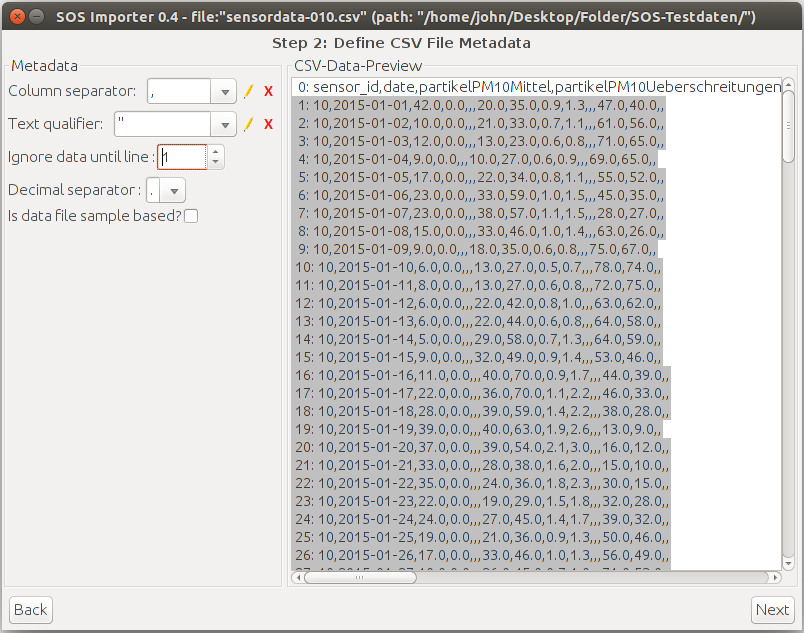
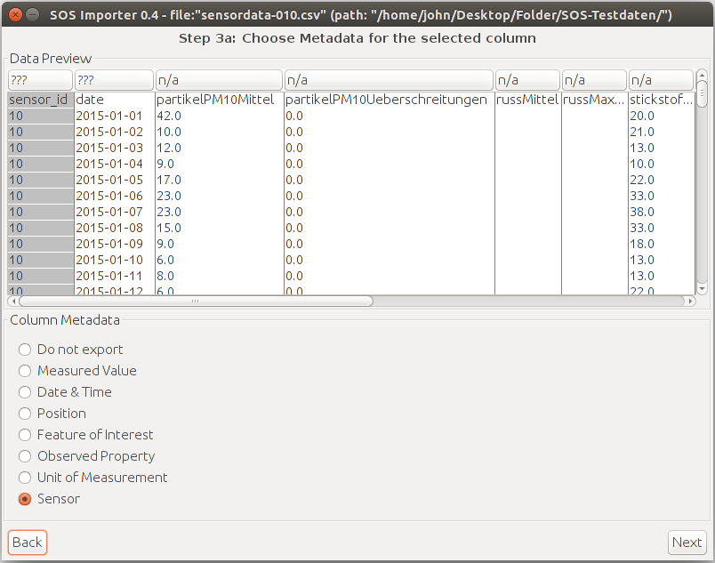
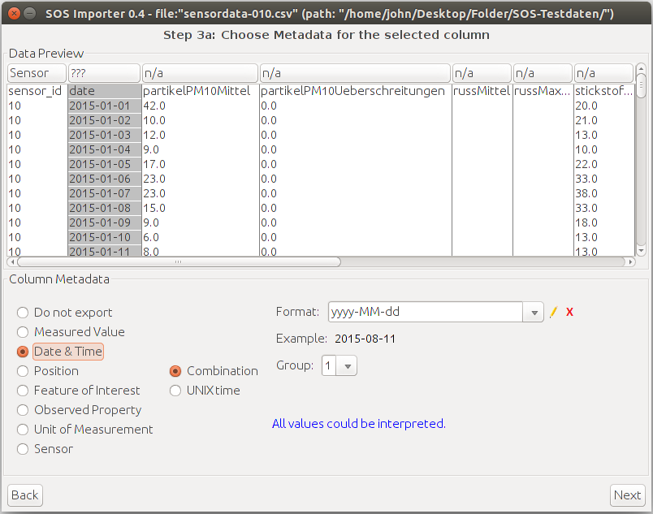
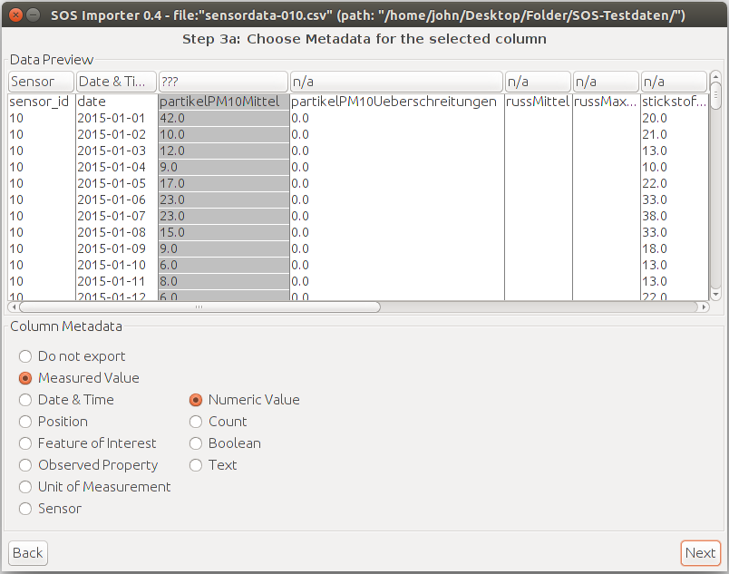
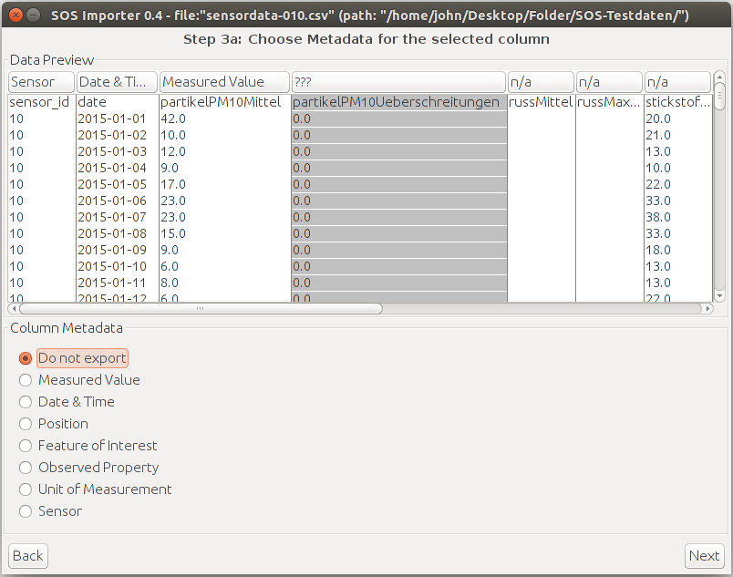
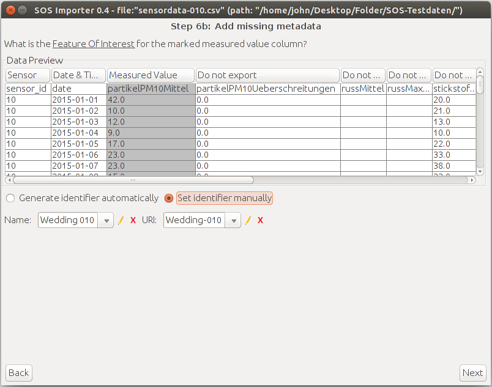
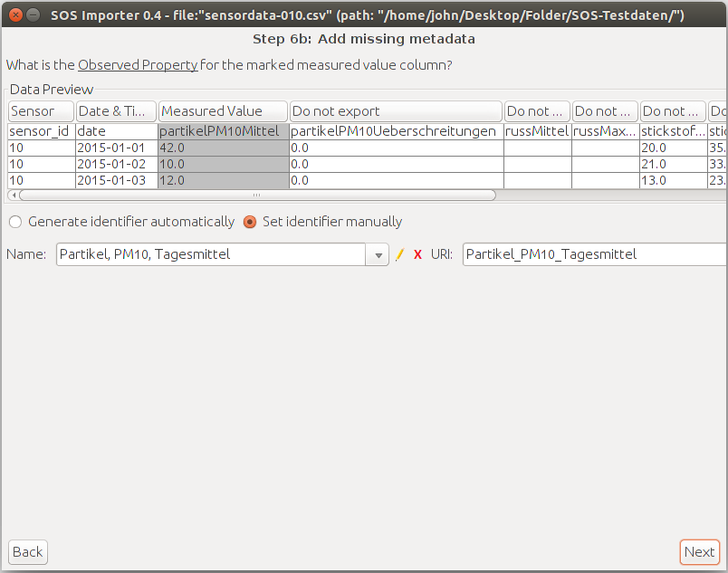
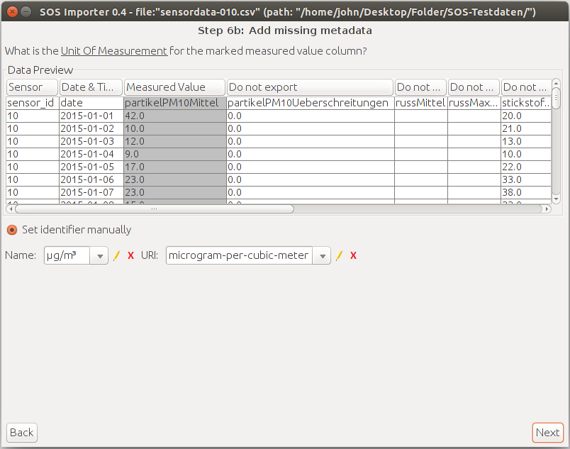
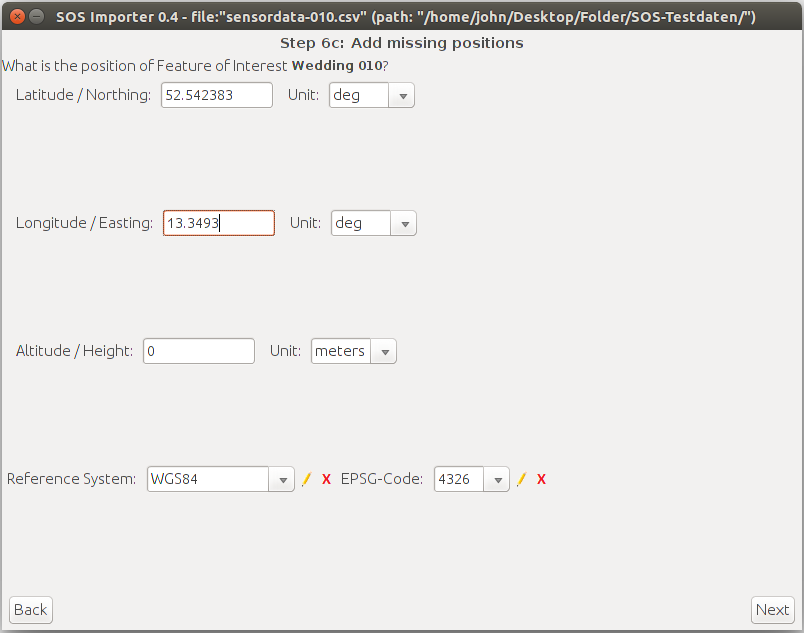
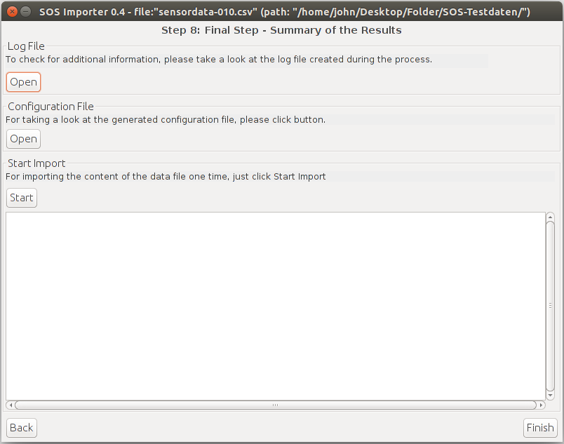

The following screenshots show how to create a configuration file to import
the sensor data for a single station from a CSV file. The wizard outputs an XML
in the end which can be passed to the importer on the command line.
All of the cells need to contain a value. If a row contains at least one empty cell the whole row will be skipped. This is a known issue and might be solved in the near future.
Here you define the header row in the CSV file.
This is the column which contains the identifier of the sensor station.
This columns contains the time stamp. The importer recognizes the correct pattern (most of the time).
If the column contains numeric values everything should be fine.
The importer also offers to import count values which works for itself. The count setting can be seen in the previous screenshot. However, the Sensor Web JS Client does not support displaying count values. Therefore, do not import them.
The screenshot shows the column partikelPM10Ueberschreitungen which is a count value.
Repeat this step for each data column.
The feature of interest is the same for all data columns. Since this example is for the station "Wedding 010" a custom identifier name and URI is created.
Repeat this step for each data column.
Now is the time to create a custom identifier name and URI for each data column.
Here is a table of the identifier names and URIs being used. The values are stored in ~/.SOSImporter/52n-sensorweb-sos-importer.properties in case you need to fix a typo.
| Identifier name | URI |
|---|---|
| Partikel, PM10, Tagesmittel | Partikel_PM10_Tagesmittel |
| Partikel, PM10, Anzahl Ueberschreitungen/Jahr | Partikel_PM10_Anzahl_Ueberschreitungen_Pro_Jahr |
| Russ, Tagesmittel | Russ_Tagesmittel |
| Russ, max. 3 Stundenwert | Russ_Max_3_Stundenwert |
| Stickstoffdioxid, Tagesmittel | Stickstoffdioxid_Tagesmittel |
| Stickstoffdioxid, max. 1 Stundenwert | Stickstoffdioxid_Max_1_Stundenwert |
| Benzol, Tagesmittel | Benzol_Tagesmittel |
| Benzol, max. 1 Stundenwert | Benzol_Max_1_Stundenwert |
| Kohlenmonoxid, Tagesmittel | Kohlenmonoxid_Tagesmittel |
| Kohlenmonoxid, max. gleitender 8 Stundenwert | Kohlenmonoxid_Max_Gleitender_8_Stundenwert |
| Ozon, max. 1 Stundenwert | Ozon_Max_1_Stundenwert |
| Ozon, max. gleitender 8 Stundenwert | Ozon_Max_Gleitender_8_Stundenwert |
| Schwefeldioxid, Tagesmittel | Schwefeldioxid_Tagesmittel |
| Schwefeldioxid, max. 1 Stundenwert | Schwefeldioxid_Max_1_Stundenwert |
Repeat this step for each data column.
Now is the time to create a custom identifier and URI for the unit of measurement. Please note that a few data columns have a different unit.
Here is a table of the identifier names and URIs being used. The values are stored in ~/.SOSImporter/52n-sensorweb-sos-importer.properties in case you need to fix a typo.
| Identifier name | URI |
|---|---|
| mg/m³ | milligram-per-cubic-meter |
| µg/m³ | microgram-per-cubic-meter |
Now enter the geographic position of the sensor station, in this case for "Wedding 010".
In order to save the configuration file choose a writeable folder for the XML file. The following settings are configured but are hard to read from the screenshot:
You are done. The configuration file should be saved in the folder you specified. The wizard now allows to immediately start the import. I recommend to skip this step. Instead you can run the importer dedicated from the command line in order to see the log output and to notice possible errors.
